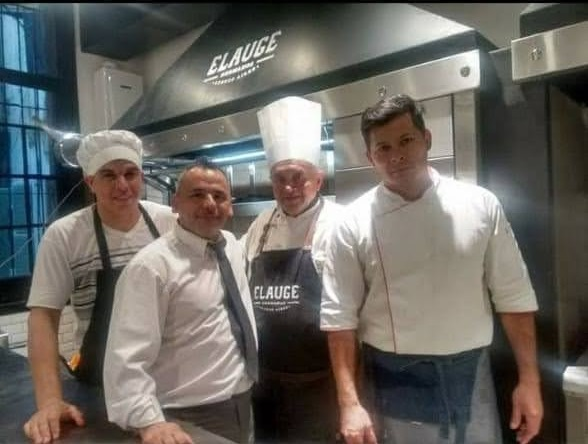
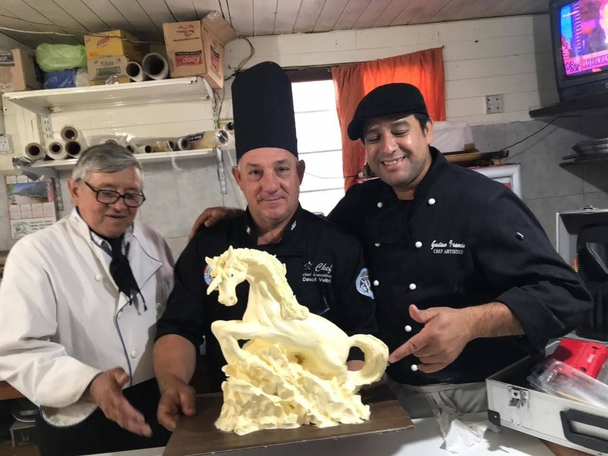
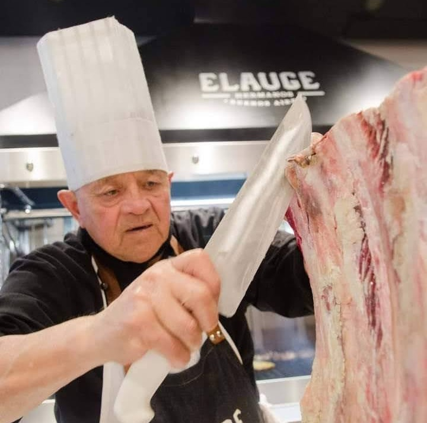
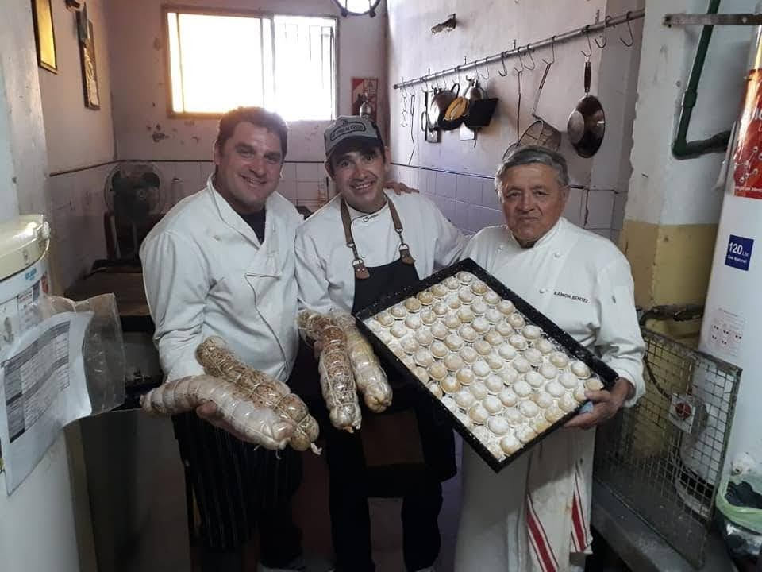

Explora el legado culinario de Argentina a través de los ojos y las manos expertas del Chef. Cada plato es una obra maestra que cuenta la historia de décadas de experiencia y amor por la cocina.
¡Bienvenido a una experiencia gastronómica única que trasciende el tiempo y celebra la autenticidad de la buena comida!
Descubre el abanico de servicios que abarca!

Asesoramiento Gastronómico
Un chef asesor gastronómico es un profesional experimentado en gastronomía que brinda asesoramiento especializado en diversos aspectos relacionados con la comida y la gestión culinaria. Su experiencia abarca no solo la preparación de alimentos, sino también la planificación estratégica, la creatividad culinaria y la optimización de operaciones en la industria alimentaria.
Colabora en la creación y diseño de menús, asegurándose de que reflejen la identidad y visión gastronómica del establecimiento.
Ayuda en la gestión eficiente de los costos de alimentos y bebidas, asegurando una combinación equilibrada de ingredientes de alta calidad y rentabilidad.
Asesora en la selección de proveedores de alimentos y establece relaciones estratégicas para garantizar la calidad de los ingredientes.
Establece estándares de calidad y procedimientos para garantizar la consistencia en la preparación de platos.
Ofrece capacitación y orientación al personal de cocina, asegurando que estén al tanto de las últimas tendencias culinarias y técnicas.
Examina y optimiza los procesos operativos en la cocina para mejorar la eficiencia y la productividad.
Contribuye al diseño y presentación de platos para mejorar la experiencia del cliente.

Catering
El servicio de catering para eventos ofrecido por el chef es una fusión única entre la pasión por la cocina y la creación de experiencias culinarias inolvidables. Con un enfoque meticuloso en la excelencia, se dedica a elevar cada ocasión a través de sabores exquisitos y presentaciones innovadoras.
Cada evento se convierte en una experiencia personalizada con menús cuidadosamente diseñados para satisfacer los gustos individuales y las necesidades específicas. La diversidad gastronómica, que abarca desde platos tradicionales hasta creaciones contemporáneas, se complementa con la utilización de ingredientes frescos y de la más alta calidad.
El compromiso de Ramón va más allá de la preparación de platos excepcionales. Se esfuerza por ofrecer un servicio impecable, adaptándose a las demandas logísticas y asegurando una experiencia fluida y satisfactoria para todos los comensales.
Ya sea para eventos corporativos, bodas íntimas, celebraciones privadas u ocasiones especiales, el equipo está dedicado a superar las expectativas, creando momentos inolvidables a través de una experiencia gastronómica que cautiva los sentidos y deleita a cada invitado.
Chef Privado
El chef se enorgullece de llevar la experiencia gastronómica directamente a tu hogar o evento privado. Con una pasión inigualable por la cocina y un enfoque meticuloso en la excelencia culinaria, Ramón se compromete a ofrecer una experiencia gastronómica única y personalizada.
Desde cenas íntimas hasta eventos exclusivos, crea momentos memorables a través de menús cuidadosamente diseñados y adaptados a tus preferencias culinarias, utilizando ingredientes frescos y de la más alta calidad. Ya sea que busques platos clásicos reinterpretados con un toque moderno o una experiencia culinaria totalmente nueva, está listo para cautivar tus sentidos y deleitar a tus invitados.
Más que un simple servicio de catering, el chef se compromete a brindar una experiencia culinaria completa. Desde la planificación del menú hasta la presentación impecable de cada plato, su dedicación se refleja en cada detalle, asegurando que cada evento sea una ocasión especial y memorable.
Con suma profesionalidad, puedes esperar no solo delicias culinarias excepcionales, sino también un servicio personalizado y una atención meticulosa que superará tus expectativas y dejará una impresión sumamente positiva y duradera en todos los comensales.
Asador Profesional
Él sabe cómo convertir cualquier evento en una fiesta para el paladar.
Con su pasión por la parrilla y una habilidad increíble, elige cuidadosamente los mejores cortes de carne y domina las técnicas de parrilla para brindar sabores deliciosos y platos que se ven tan bien como saben. Ya sea una reunión íntima o un gran evento, confía en este asador para darle un toque ahumado y sabroso a cualquier ocasión especial.
Viandas
El servicio de viandas ofrecido por el Chef es la solución perfecta para empresas que buscan alimentar a su personal con comidas de calidad y equilibradas, así como para eventos que requieran una opción gastronómica conveniente y deliciosa.
Nuestra especialidad radica en la preparación meticulosa de viandas a medida, adaptadas a los horarios y preferencias alimenticias de tu personal o evento. Estas viandas, elaboradas con ingredientes frescos y seleccionados cuidadosamente, garantizan no solo un sabor excepcional, sino también la nutrición necesaria para mantener a tus empleados satisfechos y enérgicos.
Además, ofrecemos la opción de pastas frescas congeladas, ideales para locales o negocios que buscan un producto de calidad listo para ser preparado y servido. Nuestras pastas frescas congeladas son elaboradas con los mejores ingredientes, conservando su frescura y sabor para brindar una experiencia culinaria auténtica y práctica.
Ya sea para un único evento o para un suministro continuo, Ramón logra ofrecer opciones variadas y saludables que se ajusten a tus necesidades específicas. Su compromiso con la frescura, la calidad y el sabor se refleja en cada comida que prepara.